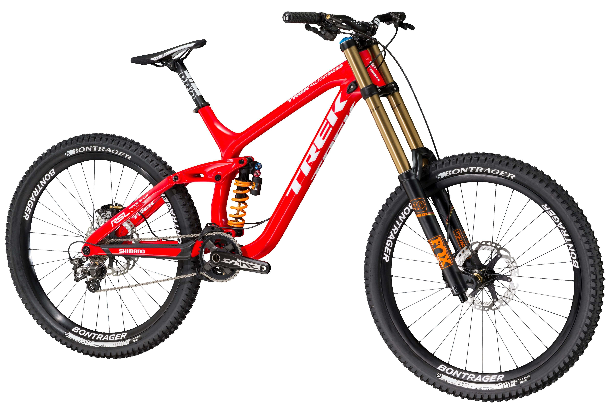

Даунхилл
Что такое даунхилл?
Скоростной спуск (даунхилл, англ. downhill — «вниз с холма») — экстремальная гоночная дисциплина горного велосипеда, суть которой заключается в прохождении трассы на время.
Велосипед для даунхилл
Фрирайд
Что представляет собой фрирайд?
Фрирайд — одна из разновидностей велосипедного спорта, возникшая в 1980 г. в Соединенных Штатах. Этот
термин применяется очень широко, встречается и в сноуборде, и в горных лыжах,
где появился
первоначально, и в мотоспорте. И все это благодаря тому, что дословно он переводится как «свободное
движение». И этой свободой спортсмен может пользоваться так, как пожелает.
Велосипед для фрирайда
Кросс-ка́нтри
Что такое кросс-кантри?
Кросс-ка́нтри (англ. cross-country) — одна из спортивных дисциплин в маунтинбайке (горном
велосипеде), гонки по пересечённой местности со спусками, затяжными подъёмами, скоростными
и
техническими участками.
Велосипед для Кросс-ка́нтри